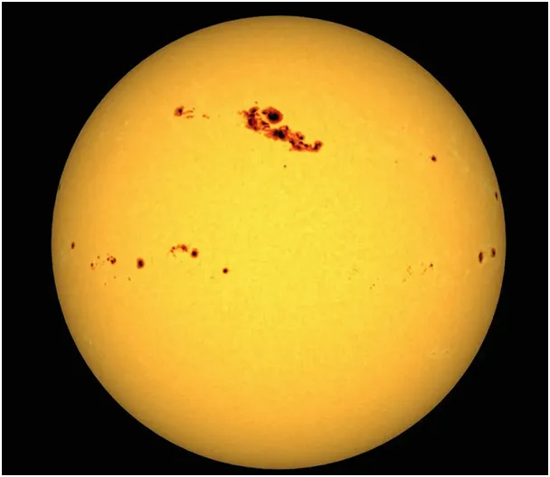
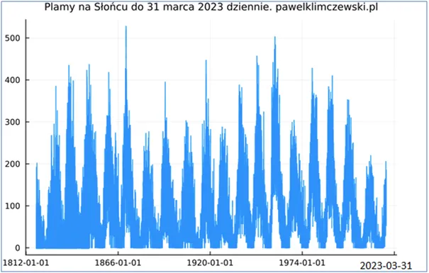
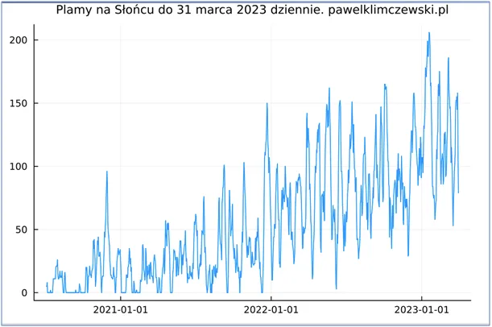
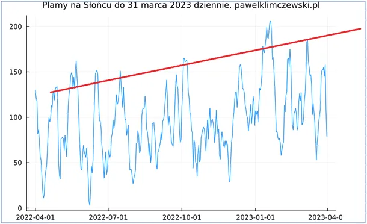

Słońce przysypia, gdzie na wakacje ?
Plamy słoneczne są przejawem wewnętrznej aktywności Słońca i są dobrym narzędziem do oceny ilości energii, jaką ono do nas wysyła. Od zawsze fascynowały naukowców i od kilkuset lat są regularnie liczone, od Epoki Napoleońskiej każdego dnia. Gdy Słońce jest aktywne można naliczyć nawet do 500 plam dziennie, w okresach uśpienia plam zupełnie brak. Srogie i długie zimy występowały właśnie wtedy. W grudniu, gdy było ciepło pisałem przewrotnie, że Słońce udaje się na drzemkę. https://pawelklimczewski.pl/2022/12/28/slonce-rzadzi-swiatem-ale-w-najblizszej-dekadzie-udaje-sie-na-drzemke/

Niestety ostatnie miesiące to potwierdzają. Zawsze jest nadzieja, że nasza najbliższa gwiazda jest kapryśna i wróci do aktywności ponad 200 plam, ale jak widać na trzecim wykresie (ostatni rok) nie ma spodziewanego wzrostu w cyklu 11 letnim. Szczyt obecnego cyklu to rok 2025, poprzedni szczyt w roku 2014 był już niski a ostatnie miesiące rozczarowują. W podanym linku opisałem długi, około 107 letni inny cykl Słońca.

Obserwowane maksima były w okolicach 1850 i 1960, a minima około 1805 i 1912. Liczba 107 lat jest obarczona błędem po powstała z danych z zaledwie 300 lat, czyli z niecałych 3 cykli, za 100 lat ktoś policzy to dokładniej. Niemniej jednak kolejny dołek wypada około 2020 roku, czyli teraz. Jeśli cykl jest dłuższy niż 107 lat to najbliższa fala 11- letnia będzie niższa niż poprzednia, jeśli ten długi cykl jest krótszy niż 107 lat to obecna fala powinna przewyższyć poprzednią. Co by nie było jesteśmy na dnie tej długiej fali i nic z tym zrobić się nie da.

Temperatury oceanów w pasie równikowym tej wiosny mamy niższe niż rok wcześniej, co potwierdza nasze obawy. Jakie będzie lato tego nie wie nikt. Globalny bilans energii cieplnej nie rozkłada się równomiernie, ciepły Prąd Zatokowy aktualnie rozpieszcza Hiszpanię, ale nie chce płynąć dalej na północ i rozgrzewać Norwegów i nas.

Cokolwiek będzie zobaczymy w TV różne kataklizmy klimatyczne, które dzięki wszechobecnym kamerom od dekady oglądamy nagminnie. Gdzie na wakacje? Polska jest piękna, ale nasz klimat jest to najkrócej mówiąc "zmienność". Wschodnie Morze Śródziemne to stabilny obszar, oddalony od Atlantyku. Stabilne wyże to gwarancja niebieskiego nieba przez wiele miesięcy. Kiedyś wiosną na Cyprze, oczywiście po tureckiej stronie, zapytałem człowieka, kiedy zużyje kilka ton suchego, sypkiego cementu, który na gołej ziemi wysypała mu przed chwilą wielka ciężarówka, u nas nikt tak nie zrobi, bo każdy deszczyk zamieni pył w skorupę. Odparł, że przez kilka miesięcy zbuduje dom, przed jesiennym deszczem będzie w ogrodzie czysto.
Paweł Klimczewski